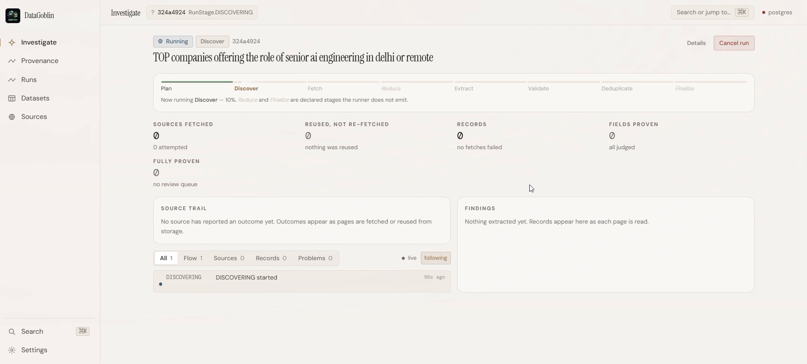
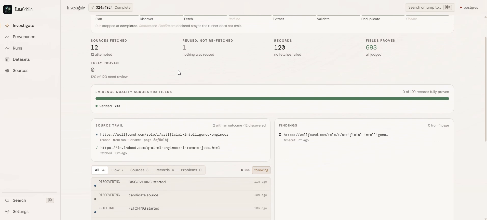
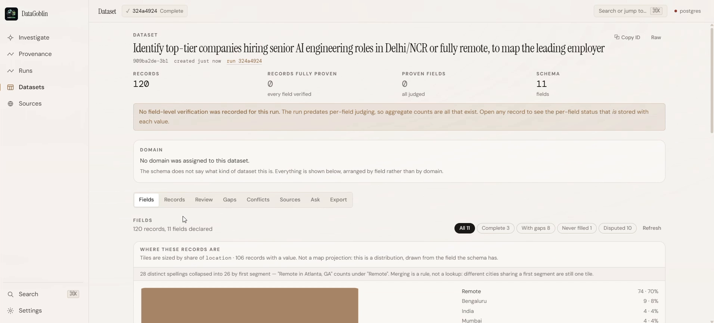
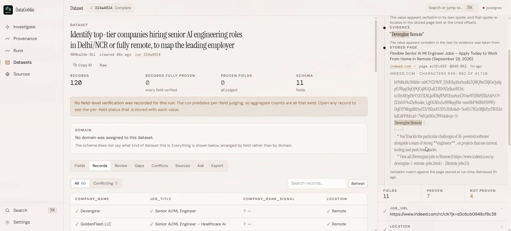
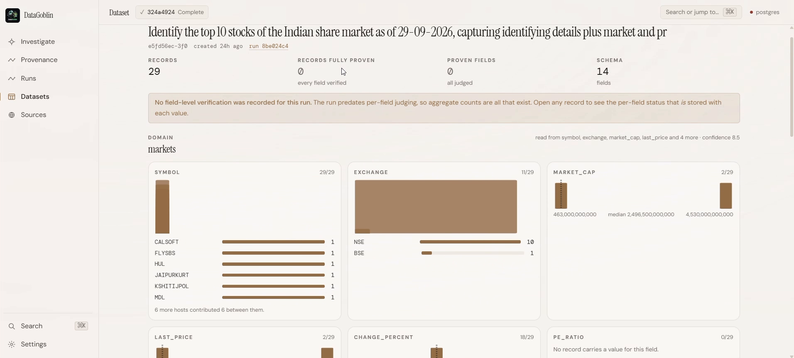
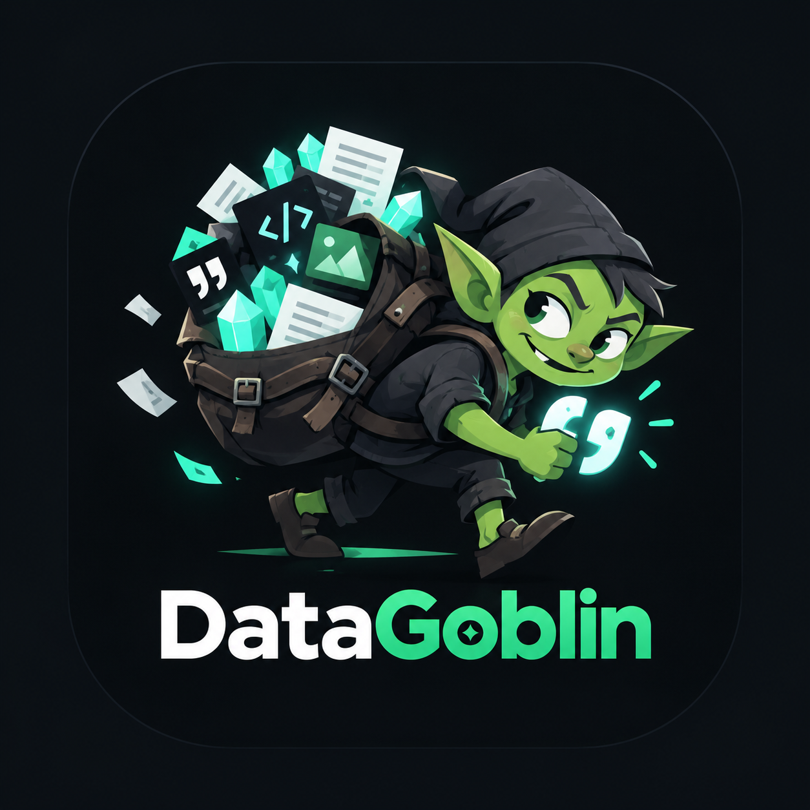

Business research, 2026
Where did this number come from? Which page? Six tabs, three hours, one unverifiable deck — and no way to tell a fact from a guess before it reaches the room.
The cost is not the search. It is the audit.
So we asked for the dataset instead
Identify top-tier companies hiring senior AI engineering roles in Delhi/NCR or fully remote

Plan
Discover
Fetch
Extract
Validate
Dedupe
How it works
A deterministic pipeline, with agents only where judgment is actually required.
12
pages
crawled

The output
One prompt becomes a structured, queryable, exportable dataset.
0
records
stored

Not a summary
Actual rows, each field carrying its own verification state.
0
companies
extracted

Click any cell
Here is the sentence it came from, the page it came from, and the hash of that page.
0/0
quotes
resolved
Why it wins the room
0/0
Every quote resolves
against stored text
0×
Faster extraction
per model swap
0
Spend ceiling,
set before the run
100%
Permitted sources
robots enforced

Not a one-trick dataset
The same run shape takes a market question and returns distribution, rankings and charts.
0
markets
modelled

DataGoblin
Ask real questions. Get defensible answers.
Apache 2.0
Self-hosted
Every field cited